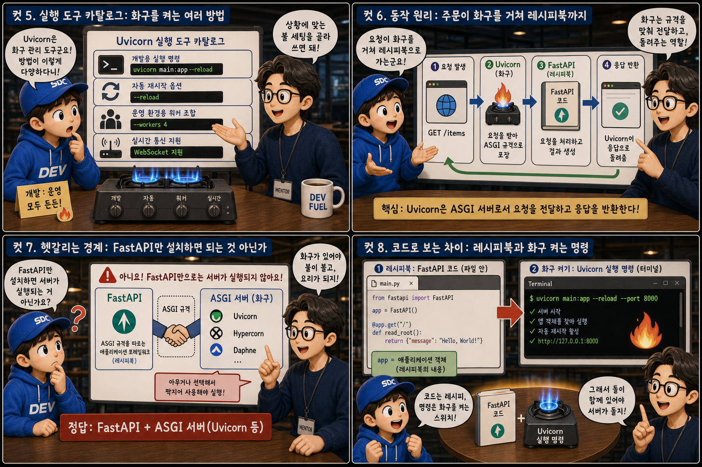
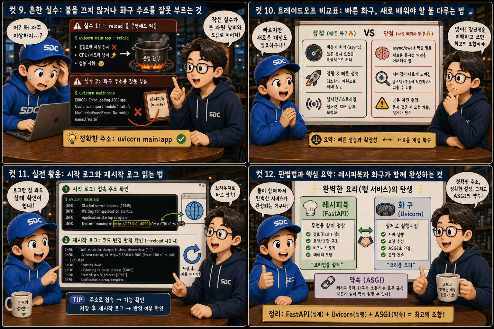

레시피북 ‘FastAPI’와 그 책에 불을 붙이는 화구 ‘Uvicorn’에 비유해, 코드가 서버가 되는 순간을 12컷으로 풀어봅니다.
WSGIvsASGI
FastAPI로 코드를 아무리 정교하게 짜도, 그 코드만으로는 아무 일도 일어나지 않습니다. 파일 안에 app = FastAPI()라고 적어두는 것은 잘 정리된 레시피북을 완성하는 일에 가깝습니다. 그 책을 펼쳐 들고 실제로 화구에 불을 붙여 손님의 주문을 받기 시작하는 존재가 따로 필요한데, 그것이 바로 Uvicorn입니다. 이 글에서는 레시피북과 화구, 그리고 둘 사이의 공통 규격인 ASGI가 어떻게 하나의 살아 있는 서버를 완성하는지 하나씩 짚어봅니다.
PART 1 / 3 — 레시피북과 화구, 서로 다른 두 존재 (컷 01–04)
fourcut-01 — 컷 01 ~ 04
컷 01
레시피북은 있는데, 누가 불을 켜는가
FastAPI로 코드를 아무리 잘 짜도 그것만으로는 아무 일도 일어나지 않는다.
조리대 위에 두꺼운 레시피북 한 권이 놓여 있습니다. 책은 펼쳐져 있지만 옆의 화구는 불이 꺼진 채 차갑기만 합니다. 그 위로 손 하나가 성냥을 들고 다가와 불을 붙이는 순간, 오렌지빛 불꽃이 책장을 은은하게 비추며 그제야 글자들이 읽히기 시작합니다. 우리가 FastAPI로 짠 코드는 사실 아주 잘 정리된 레시피북일 뿐입니다. 어떤 주문(요청)이 들어오면 어떤 요리(응답)를 내놓을지 적혀 있지만, 그 책 자체는 불을 붙이지도 손님을 받지도 못합니다. 그 책을 펼쳐 들고 실제로 화구에 불을 켜 손님의 주문을 받기 시작하는 존재가 바로 Uvicorn입니다.
컷 02
정의부터 명확히: 레시피북과 화구는 다른 존재다
FastAPI는 "어떻게 응답할지" 적힌 코드일 뿐이고, Uvicorn은 그 코드를 실행해 실제 네트워크 요청을 받아들이는 ASGI 서버다.
FastAPI는 파이썬으로 작성된 코드, 즉 "어떤 주소로 어떤 요청이 오면 무엇을 돌려줄지"를 정의해 둔 레시피북입니다. 하지만 이 레시피북은 스스로 인터넷 요청을 받을 수 없습니다. Uvicorn은 실제로 컴퓨터의 네트워크 포트를 열어 요청을 받아들이고, 그 요청을 FastAPI가 정의한 함수에 실제로 전달해 실행시키는 프로그램, 즉 ASGI 서버입니다. 레시피북이 아무리 훌륭해도 화구에 불이 켜져 있지 않으면 요리는 시작되지 않습니다. code / process
컷 03
나란히 비교: 한 번에 한 손님 vs 동시에 여러 손님
WSGI는 한 번에 한 요청씩 순차적으로 처리하고, ASGI는 여러 요청을 동시에 다루는 비동기 방식이다.
one kitchen, two ways of taking orders
비교 축
WSGI
ASGI
처리 방식
one request at a time / synchronous
many requests at once / asynchronous
화구 구성
화구 한 구 + 냄비 하나
여러 불구멍이 동시에 켜짐
손님 대기
한 줄로 길게 줄을 서서 대기
여러 손님이 동시에 응대받음
WSGI(Web Server Gateway Interface)는 Flask나 초기 Django가 쓰던 방식으로, 화구 한 구에 냄비 하나만 놓고 요리하듯 한 번에 한 요청씩 순서대로 처리합니다. 앞 손님의 요리가 끝나야 다음 손님의 주문을 받을 수 있는 셈입니다. ASGI(Asynchronous Server Gateway Interface)는 화구에 불구멍을 여러 개 켜두듯, 하나의 요청이 데이터베이스 응답을 기다리는 동안에도 다른 요청을 동시에 처리할 수 있게 해줍니다. FastAPI가 빠르다고 알려진 이유의 상당 부분은 바로 이 ASGI 방식을 쓰는 Uvicorn 위에서 실행되기 때문입니다.
컷 04
한 문장으로 정리하면
Uvicorn은 FastAPI 코드를 실제로 실행시키는 ASGI 서버이고, ASGI는 그 실행을 가능케 하는 공통 규격이다.
FASTAPI
무엇을 할지 정의하는 레시피북
UVICORN
실제로 불을 켜고 실행하는 화구
ASGI — the shared order slip
Uvicorn은 FastAPI가 정의한 코드를 실제로 실행시켜 네트워크 요청을 받고 응답을 돌려주는 ASGI 서버입니다. ASGI는 파이썬 웹 프레임워크와 서버가 서로 대화하기 위해 정한 공통 규격으로, 레시피북과 화구가 같은 주문판을 보고 손발을 맞추게 해주는 약속입니다. 이 한 문장만 기억해도 왜 uvicorn main:app이라는 명령이 꼭 필요한지 이해할 수 있습니다.
PART 2 / 3 — 실행 도구와 동작 원리 (컷 05–08)

fourcut-02 — 컷 05 ~ 08
컷 05
실행 도구 카탈로그: 화구를 켜는 여러 방법
Uvicorn은 개발용 실행 명령, 자동 재시작 옵션, 운영 환경용 워커 조합, 실시간 통신 지원까지 다양한 실행 방식을 갖췄다.
개발 중에는 터미널에 uvicorn main:app --reload라는 명령 한 줄로 화구에 불을 켤 수 있습니다. --reload 옵션은 코드를 저장할 때마다 Uvicorn이 알아서 서버를 다시 시작해 매번 수동으로 껐다 켜는 수고를 덜어줍니다. 실제 서비스를 운영할 때는 Uvicorn 워커를 여러 개 띄워 관리하는 Gunicorn과 조합해, 화구 여러 대가 동시에 손님을 받도록 구성하는 경우가 많습니다. 또한 Uvicorn은 WebSocket 같은 실시간 양방향 통신도 지원해, 채팅이나 실시간 알림처럼 계속 열려 있는 주문 통로가 필요한 경우에도 쓸 수 있습니다.
컷 06
동작 원리: 주문이 화구를 거쳐 레시피북까지
브라우저의 요청은 Uvicorn이 받아 ASGI 규격으로 포장한 뒤 FastAPI에 전달하고, 처리 결과를 다시 Uvicorn이 응답으로 돌려준다.
사용자 요청→Uvicorn 접수→ASGI call→FastAPI 처리→HTTP response→응답 반환
사용자가 브라우저에서 어떤 주소에 접속하면, 그 요청을 가장 먼저 받는 것은 FastAPI가 아니라 Uvicorn입니다. Uvicorn은 이 요청을 ASGI라는 공통 규격에 맞는 형태로 포장해 FastAPI 코드에 전달하고, FastAPI는 자신이 정의해 둔 함수 중 해당 경로에 맞는 것을 찾아 실행합니다. 처리 결과가 나오면 FastAPI는 그 결과를 다시 ASGI 규격에 맞춰 Uvicorn에 돌려주고, Uvicorn이 이를 실제 HTTP 응답으로 변환해 손님에게 돌려줍니다. 화구가 없으면 레시피북의 어떤 페이지도 실제 요리로 이어질 수 없는 것과 같습니다.
컷 07
헷갈리는 경계: FastAPI만 설치하면 되는 것 아닌가
FastAPI는 ASGI 규격을 따르는 여러 화구 중 아무거나와 짝지어 써야 실제로 동작한다.
FastAPI를 처음 배우는 사람들이 자주 하는 오해 중 하나는 FastAPI 패키지만 설치하면 서버가 알아서 돌아갈 것이라는 생각입니다. 하지만 FastAPI는 어디까지나 레시피북, 즉 요청을 어떻게 처리할지 정의한 코드일 뿐이고, 그 코드를 실제로 실행시키는 화구는 별도로 필요합니다. ASGI라는 공통 규격을 따르기만 하면 Uvicorn 외에도 Hypercorn, Daphne 같은 다른 화구를 골라 써도 FastAPI 코드는 그대로 동작합니다. 다만 이 시리즈와 대부분의 튜토리얼에서는 가장 널리 쓰이고 빠른 Uvicorn을 기본 화구로 사용합니다. FastAPI needs an ASGI server to run
컷 08
코드로 보는 차이: 레시피북과 화구 켜는 명령
FastAPI 코드는 파일 안에 애플리케이션 객체로 존재하고, Uvicorn은 터미널 명령으로 그 객체를 지목해 실제로 실행시킨다.
FastAPI — 레시피북 작성 (main.py)
# 아직 실행되지 않은 정의일 뿐from fastapi import FastAPI
app = FastAPI()
@app.get("/")
async def read_root():
return {"message": "hello"}
Uvicorn — 화구에 불붙이기 (터미널)
# main.py 안의 app 객체를 지목해 실행
$ uvicorn main:app --reload
INFO: Will watch for changes
INFO: Uvicorn running on
http://127.0.0.1:8000
FastAPI 코드는 main.py 같은 파일 안에 app = FastAPI()라는 애플리케이션 객체로 존재합니다. 이 시점에서는 아직 아무 요청도 받을 수 없는, 그냥 정의된 레시피북일 뿐입니다. 터미널에서 uvicorn main:app --reload를 실행하면, Uvicorn은 main.py 파일 안의 app이라는 객체를 정확히 찾아내 그 레시피북에 불을 붙이고 실제로 포트를 열어 요청을 받기 시작합니다. main:app이라는 표기는 각각 ‘파일 이름’과 ‘그 안의 애플리케이션 변수 이름’을 콜론으로 이어 화구에게 정확히 알려주는 주소입니다.
PART 3 / 3 — 실전 감각과 요약 (컷 09–12)

fourcut-03 — 컷 09 ~ 12
컷 09
흔한 실수: 불을 끄지 않거나 화구 주소를 잘못 부르는 것
--reload를 운영 환경에도 켜두면 자원을 낭비하고, main:app의 이름을 실제 코드와 다르게 적으면 화구가 레시피북을 찾지 못한다.
⚠ reload in production wastes resources
--reload 옵션은 코드가 바뀔 때마다 파일 변경을 계속 감시해야 하므로 개발할 때는 편리하지만, 실제 서비스 운영 환경에서 그대로 켜두면 불필요한 감시 작업이 서버 자원을 계속 갉아먹습니다.
✓ main:app must match your actual file & variable
운영 환경에서는 이 옵션을 끄고 Gunicorn과 Uvicorn 워커 조합처럼 안정적인 방식으로 화구를 켜는 것이 일반적입니다. 또 다른 흔한 실수는 uvicorn main:app에서 main이나 app 부분을 실제 파일명이나 변수명과 다르게 적는 것으로, 이 경우 Uvicorn은 레시피북 자체를 찾지 못해 "찾을 수 없다"는 오류를 내며 실행을 멈춥니다.
화구 옆에 센서를 주렁주렁 매단 채 과열되어 연기를 내는 장면과, 손님이 잘못된 주소가 적힌 종이를 들고 엉뚱한 문 앞에서 두리번거리는 장면. 설정 하나가 자원 낭비와 오류로 직결됩니다.
컷 10
트레이드오프 비교표: 빠른 화구, 새로 배워야 할 불 다루는 법
비동기 처리 덕분에 많은 동시 요청을 효율적으로 다루는 대신, async/await라는 새로운 개념을 익혀야 하는 학습 부담이 생긴다.
faster kitchen, new fire-handling skills required
비교 축
얻는 것
새로 배워야 할 것
동시 처리
여러 화구 구멍이 동시에 켜짐
초보 요리사는 여러 화구 앞에서 당황
코드 작성 방식
매끄럽게 흐르는 요청 처리
async / await라는 낯선 조리 도구
자원 효율
적은 연료로 많은 요리 처리
불을 잘못 다루면 그을리는 실수도 생김
디버깅 난이도
평온한 순차 처리와는 다름
여러 화구의 순서를 동시에 쫓아야 함
Uvicorn이 채택한 비동기 처리 방식은 하나의 요청이 데이터베이스나 외부 API 응답을 기다리는 동안에도 다른 요청을 계속 받아 처리할 수 있게 해, 적은 자원으로도 많은 동시 접속을 효율적으로 다룰 수 있게 해줍니다. 하지만 그 대가로 개발자는 async와 await라는, 지금까지 익숙했던 순차적인 코드 흐름과는 다른 새로운 문법과 사고방식을 익혀야 합니다. 처음에는 어떤 함수 앞에 async를 붙여야 하는지, 왜 await을 빼먹으면 예상과 다르게 동작하는지 헷갈릴 수 있지만, 이는 여러 화구를 동시에 다루는 요리사가 되기 위해 반드시 거쳐야 할 학습 과정입니다.
컷 11
실전 활용: 시작 로그와 재시작 로그 읽는 법
시작 로그에서 접속 주소를 확인해 바로 접속해볼 수 있고, 재시작 로그로 코드 반영 여부를 확인할 수 있다.
🔥 서버가 처음 켜졌을 때
Uvicorn running on http://127.0.0.1:8000 확인
그 주소를 그대로 브라우저에 붙여넣어 접속
지금 켜진 화구, 즉 내 컴퓨터의 서버에 바로 접속
🔄 --reload 상태에서 코드를 저장했을 때
"WatchFiles detected changes" 로그 확인
서버가 자동으로 다시 시작되는 메시지 확인
새로고침 전에 코드 반영 여부를 미리 가늠
Uvicorn을 실행하면 터미널에 Uvicorn running on http://127.0.0.1:8000 같은 줄이 뜨는데, 이 주소를 그대로 브라우저에 붙여넣으면 지금 켜진 화구, 즉 내 컴퓨터에서 실행 중인 서버에 바로 접속해볼 수 있습니다. --reload 옵션을 켠 상태로 코드를 수정하고 저장하면, 터미널에 파일 변경을 감지했다는 로그와 함께 서버가 자동으로 다시 시작되는 메시지가 나타납니다. 이 재시작 로그를 확인하는 습관을 들이면, 내가 고친 코드가 제대로 반영되었는지 브라우저를 새로고침하기 전에 미리 가늠할 수 있습니다.
컷 12
판별법과 핵심 요약: 레시피북과 화구가 함께 완성하는 것
레시피북(FastAPI)이 무엇을 할지 정하고, 화구(Uvicorn)가 실제로 그것을 실행시키며, ASGI가 이 모든 것을 가능하게 한다.
가장 간단한 판별법은 이것입니다. 코드 안에서 "어떤 요청에 어떻게 응답할지"를 정의하고 있다면 그것은 레시피북, 즉 FastAPI의 몫이고, 터미널에서 실제로 실행 명령을 내려 포트를 열고 요청을 받기 시작한다면 그것은 화구, 즉 Uvicorn의 몫입니다. ASGI는 이 둘이 서로 다른 존재이면서도 손발을 맞출 수 있게 해주는 공통 규격이며, 덕분에 개발자는 Uvicorn뿐 아니라 다른 ASGI 서버로도 같은 FastAPI 코드를 실행시킬 수 있습니다. 레시피북이 아무리 정교해도 불을 켜는 존재가 없으면 요리는 시작되지 않고, 반대로 화구가 아무리 좋아도 레시피북이 없으면 무엇을 만들어야 할지 알 수 없습니다.
FastAPI = 레시피북Uvicorn = 화구ASGI = 공통 규격WSGI는 순차, ASGI는 동시--reload는 개발용판별법: 실행 명령이 있으면 화구다
하나의 레시피북, 하나의 화구, 하나의 서버
FastAPI는 무엇을 할지 정의하고, Uvicorn은 그 정의를 실제로 실행시킵니다. 레시피북이 아무리 정교해도 불을 켜는 존재가 없으면 요리는 시작되지 않고, 이 둘이 함께 있어야 비로소 우리가 매일 접속하는 애플리케이션이 완성됩니다.